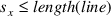

Index
1. Circle line collision
- assumes that we have a robust
solution to the circle circle problem which is fully
debugged and ready to be used :-)
-
- at what time is the
earliest collision between the line and circle?
2. Step one
- is to consider the line as
stationary and only the circle as moving:
- hence we now have the
relative velocity, acceleration between the circle and line
- the radius of the circle is
3. Step two
- consider the line to be lying on the
X axis, say, with [
,
] on the point [0, 0]
- and [
,
] at [length(L) , 0]
- this involves translating
the line and circle by [
,
]
- it also involves rotating the line, circle and the
relative velocity and acceleration by
- we can redraw our diagram as:
4. Step 3
- redraw the diagram as:
- the radius
of the circle is

- now we can ask three questions:
- (i) does the
point
hit the left circle?
- in which case the
circle will hit the left edge of the line
- (ii)
does the point
hit the right circle?
- in which case
the circle will hit the right edge of the line
-
(iii) does the point
hit inbetween the left and right end points of the line?
5. Step 4
- to answer both (i) and (ii) we
notice that:
- all we need to do is call our circle
circle algorithm and ask this question as whether the new
circle hits point (a circle with a radius of 0)
- to
answer (iii) we return to the diagram:

- we need to know at what
time,
 , our point hits the X axis
, our point hits the X axis - we only need to consider
the Y values of the velocity, position, acceleration vectors
- so:
- and solve for

- now we have a value for
 we can find where about on the X axis the point will hit
using the same formula, but we plug in the X values of the
velocity, position, acceleration vectors
we can find where about on the X axis the point will hit
using the same formula, but we plug in the X values of the
velocity, position, acceleration vectors - let
be the new position
- if
and

- from
answering questions (i), (ii), (iii) we ignore any negative
time values, only remember the smallest time value >= 0
which tells us the next time of a collision
6. Calculating the Centre of Gravity of a polygon (centroid of polygon)
- clearly the centre of gravity for a
linear mass circle is its centre
- how do we calculate
the centre of gravity for a linear mass polygon?
-
centroid of a non-self-intersecting closed polygon defined
by a number of points (or vertices):
-
- each point or vertice must be presented in a
clockwise or anticlockwise order
- we need to find
position
which is the centre of gravity of this polygon
-
firstly we need to find the polygons area
-
-
- area
of box is:
- area =
7. Iteration 0.a of the area calculation

8. Iteration 0.b of the area calculation
area
of red box - blue box = 1
9. Iteration 1.a of the area calculation
10. Iteration 1.b of the area calculation
red
box - blue box = -2 exercise for the reader, complete
the diagrams for the remaining iterations
11. Calculating the centre of gravity of a polygon
is calculated via:
12. Calculating C of G in pge
- please see
c/twoDsim.c and the functions
calculateCofG and
calcArea
Index
1. Circle line collision
2. Step one
3. Step two
4. Step 3
5. Step 4
6. Calculating the Centre of Gravity of a polygon (centroid of polygon)
7. Iteration 0.a of the area calculation
8. Iteration 0.b of the area calculation
9. Iteration 1.a of the area calculation
10. Iteration 1.b of the area calculation
11. Calculating the centre of gravity of a polygon
12. Calculating C of G in pge
Index
This document was
produced using
groff-1.22.